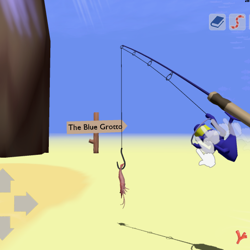

が溜まります。
が溜まります。
珊瑚の欠片は餌の購入時にご利用いただけます。餌はボタンから購入できます。
チンアナゴを釣ったり、餌をあげたりできるアプリです。
ホームは釣り上げたチンアナゴが集まる場所です。
釣り上げたチンアナゴには餌をあげましょう。
ステップ① ボタンで餌を選択できます。
ステップ② スポイトをタップして餌をあげましょう。
餌をあげると珊瑚の欠片が溜まります。
珊瑚の欠片は餌の購入時にご利用いただけます。餌はボタンから購入できます。

チンアナゴに餌をあげ続けると移動できる釣り場が増えます。
移動できる釣り場は最大６エリアです。
ホームに集まれるチンアナゴは最大19匹です。
逃してあげたいチンアナゴは、上方向にスワイプしてください。
釣り場への移動するには、左上のボタンをタップしてください。
釣り場はチンアナゴを釣ることができるエリアです。珍しいチンアナゴを探して釣りましょう。
ステップ① 左下の移動ボタンでチンアナゴを探しましょう。
ステップ② 釣り餌をチンアナゴが食べたらリールを巻いてください。
リールを巻き上げるには、円を描くように ボタンを移動させます。
ボタンを移動させます。
ステップ③ チンアナゴの体の半分が地面から出たら捕獲成功です。
珍しいチンアナゴを釣り上げた場合は ボタンで確認してみてください。
ボタンで確認してみてください。
ホームへの移動するには、左上のボタンをタップしてください。
餌がなくなったら、エビとカニをタップして捕まえるか、宝箱をタップするとゲットできます。
釣り餌はボタンからも購入できます。
【お問い合わせ先】 ichijo.neo@gmail.com